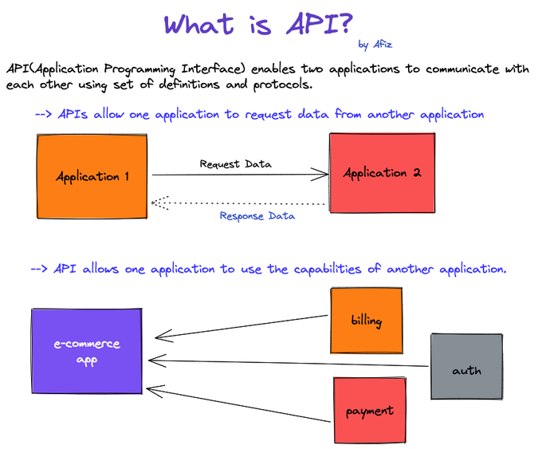
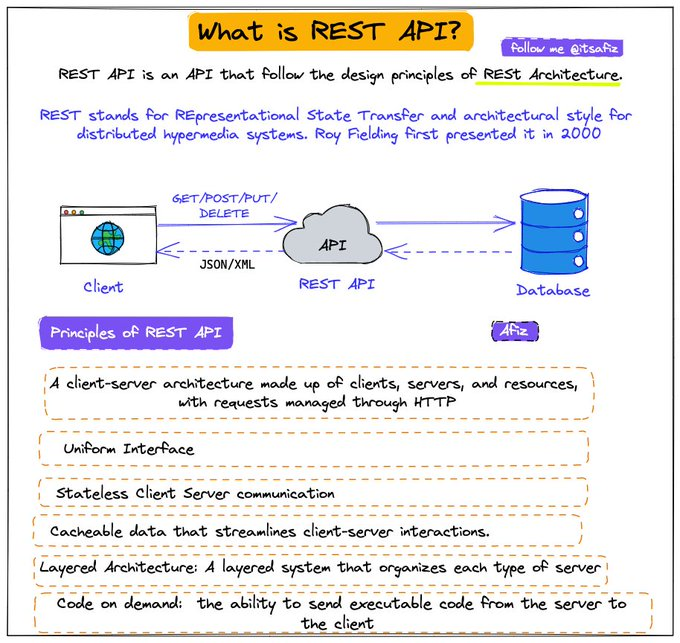
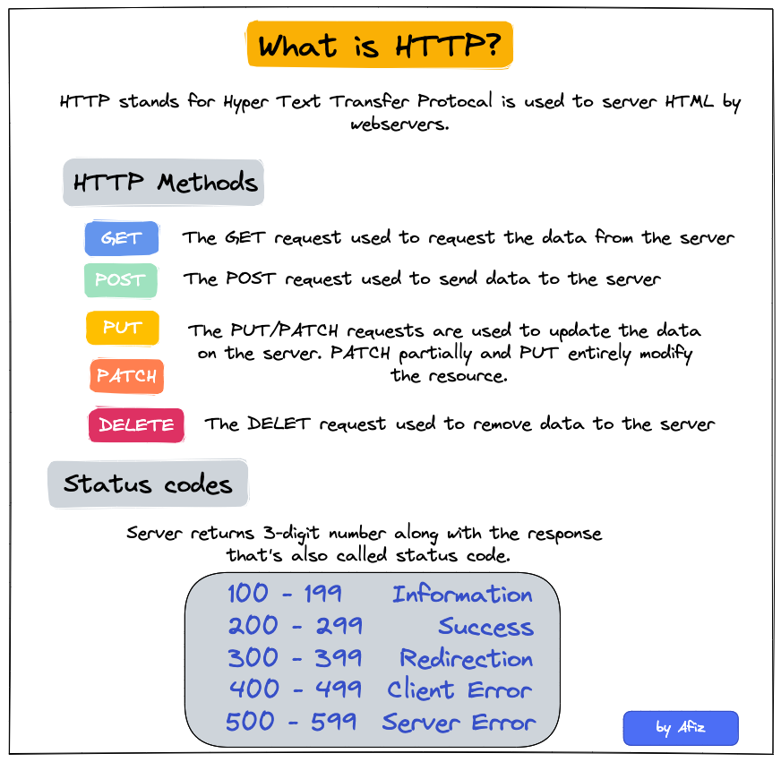
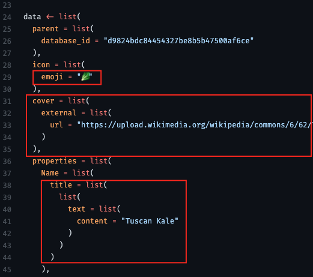
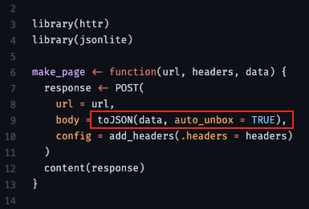
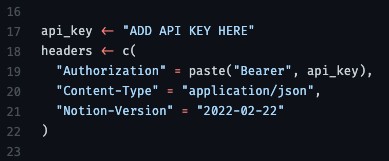
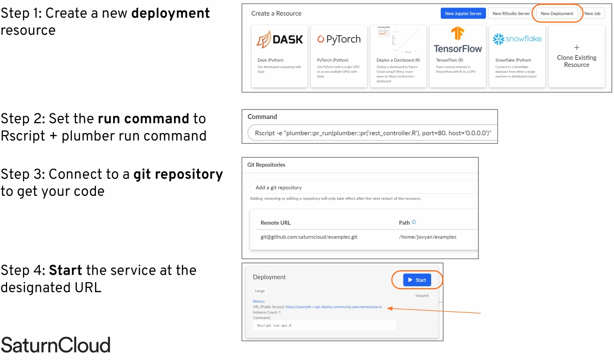

APIs
Misc
- Definition
 - REST API
 - Design questions
- Should the API receive the entire datapoint (e.g sensitve customer info) or just an ID for you to query in a database itself?
- Where should the model be loaded from? Disk? Cloud? (see Production, Deployment >> Model Deployment Strategies)
- What diagnostic output should be returned along with result?
- Use CI/CD to unit test, rebuild, and deploy the API every time there’s a push a commit to the production branch of your repo.
- Best Practices Thread
- Versioning
- IDs vs UUIDs
- Nested resources
- JSON API
- Let the client decide what it wants
- Important to create unit tests to use before code goes into production
- Test all endpoints
- Check data types
- {testthat}
Example
library(testthat) source("rest_controller.R") testthat("output is a probability", { input <- list(id = 123, name = "Ralph") result <- make_prediction(input) expect_gte(result, 0) expect_lte(result, 1) })
- The only difference here between GET and POST is that you can’t put parameters and their values in the URL for POST. The parameters and values are passed in the request body as JSON.
- GET is a request for data from a server POST sends data to a server and also can receive data.
- An IO-bound task spends most of its time waiting for IO responses, which can be responses from webpages, databases, or disks. For web development where a request needs to fetch data from APIs or databases, it’s an IO-bound task and concurrency can be achieved with either threading or async/await to minimize the waiting time from external resources.
Terms
- Async/Await — Unlike threading where the OS has control, with this method, we can decide which part of the code can be awaited and thus control can be switched to run other parts of the code. The tasks need to cooperate and announce when the control will be switched out. And all this is done in a single thread with the
awaitcommand. (article) - Threading — Uses multiple threads and takes turns to run the code. It achieves concurrency with pre-emptive multitasking which means we cannot determine when to run which code in which thread. It’s the operating system that determines which code should be run in which thread. The control can be switched at any point between threads by the operating system. This is why we often see random results with threading (article)
- Body — information that is sent to the server. (Can’t use with GET requests.)
- Endpoint — a part of the URL you visit. For example, the endpoint of the URL https://example.com/predict is /predict
- Headers — used for providing information (think authentication credentials, for example). They are provided as key-value pairs
- Method — a type of request you’re sending, can be either GET, POST, PUT, PATCH, and DELETE. They are used to perform one of these actions: Create, Read, Update, Delete (CRUD)
Methods

GET
# example 1 args <- list(key = "<key>", id = "<id>", format = "json", output = "full", count = "2") api_json <- GET(url = URL, query = args) # example 2 (with headers) res = GET("https://api.helium.io/v1/dc_burns/sum", query = list(min_time = "2020-07-27T00:00:00Z" , max_time = "2021-07-27T00:00:00Z"), add_headers(`Accept`='application/json' , `Connection`='keep-live')) # example 3 get_book <- function(this_title, this_author = NA){ httr::GET( url = url, query = list( key = token, q = ifelse( is.na(this_author), glue::glue('intitle:{this_title}'), glue::glue('intitle:{this_title}+inauthor:{this_author}') ))) }POST
# base_url from get_url above base_url <- "https://tableau.bi.iu.edu/" vizql <- dashsite_json$vizql_root session_id <- dashsite_json$sessionid sheet_id <- dashsite_json$sheetId post_url <- glue("{base_url}[{vizql}]{style='color: #990000'}/bootstrapSession/sessions/{session_id}") dash_api_output <- POST(post_url, body = list(sheet_id = sheet_id), encode = "form", timeout(300))Example: json body

- From thread
- “use auto_unbox = TRUE; otherwise there are some defaults that mess with your API format”
- “url” is the api endpoint (obtain from api docs)
- headers

Plumber
Misc
- Adding `host = “0.0.0.0” to
run_pr()opens the API to external traffic
- Adding `host = “0.0.0.0” to
Cloud options for serving Plumber APIs
Install everything on an Amazon EC2 instance
Using a Docker image
Saturn Cloud Deployments
Google Cloud Run
Docker/Kubernetes
Managed Solutions
- RStudio Connect
- Digital Ocean
Load Testing
- {loadtest}
Test how your API performs under various load scenarios
Outputs tibble of various measurements
Example:
library(loadtest) results <- loadtest(url = <api_url>, method = "GET", threads = 200, loops = 1000)- Says simulate 200 users hitting the API 1000 times
- {loadtest}
Documentation
- Plumber creates an OpenAPI (aka Swagger) YAML file that documents parameters, tags, description, etc. automatically for users to know how to use your API
- Access
- View webui, e.g .(http://127.0.0.1:9251/__docs__/)
- Edit the yaml
- e.g. (http://127.0.0.1:9251/openapi.json)
Scaling
- Natively can only handle 1 request at a time
- {valve} - Parallelize your plumber APIs. Redirects your plumbing for you.
- {future} - can be used to spawn more R processes to handle multiple requests
Resource: Rstudio Global 2021
Example
# rest_controller.R future::plan("multisession") @* @post /make-prediction make_prediction <- function (req) { future::future({ user_info <- req$body df_user <- clean_data(user_info) # sourced helper function result <- predict(model, data = df_user) result }) }
Logging
- Useful for debugging, monitoring performance, monitoring usage
- Provides data for ML monitoring to alert in case of data/model drift
- {logger}
Example:
#* @post /make-prediction make_predicition <- function(req) { user_info <- req$body df_user <- clean_data(user_info) # sourced helper function result <- predict(model, data = df_user) logger::log_info(glue("predicted_{user_info$id}_[{result}]{style='color: #990000'}")) aws.s3::s3save(data.frame(id = user_info$id, result = result), ...) result }
Example: Basic Get request
rest_controller.R
#* @get /sum function(a, b) { as.numeric(a) + as.numeric(b) }- “/sum” is an endpoint
Run Plumber on rest_controller.R
plumber::pr("rest_controller.R") %>% plumber::pr_run(port = 80)- 80 is a standard browser port
Get the sum of 1 + 2 by sending a Get request
- Type “127.0.0.1/sum?a=1&b=2” into your browser
httr::GET("127.0.0.1/sum?a=1&b=2")
Example: Basic Model Serving
rest_controller.R
source("helper_functions.R") library(tidyverse) model <- read_rds("trained_model.rds") #* @post /make-prediction make_predicition <- function(req) { user_info <- req$body df_user <- clean_data(user_info) # sourced helper function result <- predict(model, data = df_user) result }